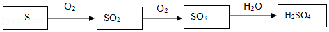

2017年北京市中考化学真题 · 科普阅读 第28题
28．（5分）阅读下面科普短文。
说起二氧化硫（SO2），你可能首先想到它是空气质量播报中提及的大气污染物。其实你真的了解SO2吗？难道它只是有害物质吗？
SO2与食品工业
SO2作为防腐剂、漂白剂和抗氧化剂广泛用于食品行业。葡萄酒酿制中适量添加SO2，可防止葡萄酒在陈酿和贮藏过程中被氧化，抑制葡萄汁中微生物的活动。食糖加工过程中可使用SO2进行脱色。按照我国《食品添加剂使用标准（GB2760﹣2014）》，合理使用SO2不会对人体健康造成危害。
标准中部分食品SO2的最大残留量
食品 | 蜜饯 | 葡萄酒 | 食糖 | 水果干 | 巧克力 | 果蔬汁 |
最大残留量 | 0.35g/kg | 0.25g/L | 0.1g/kg | 0.1g/kg | 0.1g/kg | 0.05g/kg |
SO2与硫酸工业
硫酸是重要的化工原料，工业制硫酸的关键步骤是SO2的获取和转化。工业利用硫制硫酸的主要过程示意如下：

硫酸工业的尾气中含有少量SO2，若直接排放会污染空气，并导致硫酸型酸雨。工业上可先用氨水吸收，再用硫酸处理，将重新生成的SO2循环利用。
SO2与化石燃料
化石燃料中的煤通常含有硫元素，直接燃烧会产生SO2．为了减少煤燃烧产生的SO2污染空气，可以采取“提高燃煤质量，改进燃烧技术”的措施，例如，对燃煤进行脱硫、固硫处理；还可以采取“优化能源结构、减少燃煤使用”的措施，例如，北京大力推广的“煤改气、煤改电”工程，有效改善了空气质量。
现在，你对SO2一定有了新的认识，在今后的化学学习中你对SO2还会有更全面的认识！
依据文章内容回答下列问题。
（1）按照国家标准，食糖中的SO2最大残留量为 g/kg。
（2）葡萄酒酿制过程中SO2的作用是 。
（3）用硫制硫酸的主要过程中，涉及到的含硫物质有S、 和H2SO4。
（4）硫酸工业生产中，吸收尾气中SO2的物质是 。
（5）下列措施能减少SO2排放的是 （填序号）。
A．将煤块粉碎
B．对燃煤进行脱硫
C．推广煤改气、煤改电
D．循环利用工业尾气中的SO2。